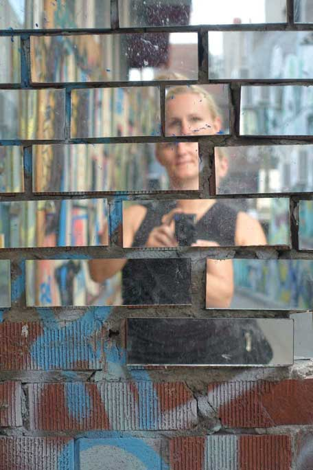

A template made by w3.css for photographers.
With a passion for capturing emotions, moments, and the real person or soul within subjects, Michelle Andreassen has spent a lot of time behind a camera.
Michelle believes that there is beauty or meaning to find in everything and every moment of life and tries to find those special bits of joy whenever possible.
